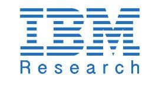

I’m a Senior Applied Scientist at Microsoft working at the intersection of applied and theoretical machine learning, with a focus on graph mining and deep learning. My goal is to develop explainable, robust, and efficient next-generation cybersecurity systems.
I completed my Machine Learning PhD at Georgia Tech where I worked with
Polo Chau.
I co-authored several winning research proposals, including a multi-million dollar
DARPA grant;
was awarded PhD fellowships from IBM Research,
NSF GRFP and
Raytheon;
and was fortunate to work with amazing engineers and scientists at

IBM Research,
Amazon,
Microsoft Advanced Threat Protection,
Microsoft Research,
 Intel and the
Naval Air Warfare Center.
Intel and the
Naval Air Warfare Center.
2022Check out my blog where I talk about machine learning, graduate school, and cybersecurity
2022Final PhD paper, MalNet-Image the largest cybersecurity binary image dataset, was accepted into CIKM
2022Our survey paper on graph vulnerability and robustness was accepted into TKDE
2021Joining Microsoft full-time as a Senior Applied Scientist!
2021Excited to work with IBM Research's Cyber Security Intelligence (CSI) team this Fall
2021Our work on MalNet, the largest graph representation learning dataset, was accepted into NeurIPS!
2021Honored to receive the IBM PhD fellowship for my work on developing next-generation explainable defenses
2021Thrilled to join Amazon's Fraud Detection and Risk Transaction team this summer


Dec. 2021Aug. 2018Ph.D. in Machine Learning
Aug. 2018Georgia Institute of Technology, Atlanta, GA
Advisor:
Duen Horng (Polo) Chau
Thesis: Developing Robust Models, Algorithms, Databases and Tools with Applications to Cybersecurity and Healthcare
Committee:
Duen Horng (Polo) Chau,
Srijan Kumar,
Diyi Yang,
B. Aditya Prakash,
Hanghang Tong
Thesis
Thesis Recording (Proposal)
Thesis Slides
May 2018 —May 2017M.S. in Computer Science
May 2017Arizona State University, Tempe, AZ
Advisor:
Hanghang Tong
Thesis: Mining Marked Nodes in Large Graphs
Committee:
Hanghang Tong,
Ross Maciejewski,
Yezhou Yang
GPA: 4.00/4.00
Thesis
May 2017 —Aug. 2015B.S. in Computer Science
Aug. 2015Arizona State University, Tempe, AZ
Advisor:
Ross Maciejewski
Thesis: Guided Augmented Reality Tours using Landmarks and Social Media
GPA: 3.98/4.00
Thesis
Thesis Recording
May 2014 —Aug. 2010B.S.E. in Electrical Engineering
Aug. 2010Arizona State University, Tempe, AZ
Advisor:
James Aberle
Thesis: Multi-Stage Linear Electromagnetic Accelerator Using Optical Triggering
GPA: 3.64/4.00
Thesis
Thesis Recording
2021IBM PhD Fellowship
One of sixteen fellows; awarded for my work in developing next-generation explainable defenses
2021Nvidia Data Science Teaching Kit
Helped develop one of five Nvidia teaching kits used by educators around the world
2019Raytheon Research Fellowship
Awarded for my PhD work in adversarial machine learning
2018 — 2021NSF Graduate Research Fellowship
National Science Foundation recognizes and supports outstanding graduate students in STEM fields
2018Outstanding Computer Science Masters Student (ASU)
Awarded to single master student demonstrating exemplary performance
2017Best Demo Award, Runner Up at CIKM '17
For "Rapid Analysis of Network Connectivity"
Present —Jan. 2022Microsoft, Redmond, WA
Jan. 2022Senior Applied Scientist, Microsoft Security Research
Design ML systems to automatically correlate cross-product security alerts into rich incident events
Dec. 2021 —Sep. 2021IBM Research, Yorktown Heights, NY
Sep. 2021Research Intern, Cyber Security Intelligence (CSI) Team
Mentor:
Teryl Taylor,
Frederico Araujo,
Jiyong Jang
Developed unsupervised graph representation learning techniques to detect suspicious activity in cloud platforms
Aug. 2021 —May 2021Amazon, Seattle, WA
May 2021Applied Scientist Intern, Fraud Detection and Risk Transaction (CTPS)
Mentor:
Hao Zheng,
Yanni Lai
Created unsupervised and semi-supervised approaches to prevent fraudulent transactions across the Amazon marketplace
May 2020 —Aug. 2020Microsoft, Redmond, WA
Aug. 2020Research Intern, Microsoft ATP + Microsoft Research
Mentor:
Karishma Sanghvi,
Yuxiao Dong
Designed semi-supervised graph neural network approach to detect malicious software
Aug. 2019 —May 2019Microsoft, Redmond, WA
May 2019Research Intern, Microsoft Advanced Threat Protection (ATP)
Mentor:
Andrew Wicker,
Joshua Neil
Created first framework to model lateral attacks on enterprise networks, enabling IT admins to quantify and mitigate network vulnerability to lateral attacks
March 2015 —Dec. 2014General Dynamics, Scottsdale, AZ
Dec. 2014Systems Engineer, Mission Systems
Worked on the Integrated Threat Force team to develop and refine the communication technology systems.
Aug. 2013 —May 2013Naval Air Warfare Center, Point Mugu, CA
May 2013Research Intern, Naval Research Entperprise Internship Program (NREIP)
Mentor:
Balaji Iyer
Explored methods of preventing electromagentic interference from coupling into superconducting receivers
Graph Vulnerability and Robustness: A Survey
Scott Freitas,
Diyi Yang,
Srijan Kumar,
Hanghang Tong,
Duen Horng (Polo) Chau
IEEE Transactions on Knowledge and Data Engineering (TKDE). 2022.
PDF
BibTeX
MalNet: A Large-Scale Image Database of Malicious Software
Scott Freitas,
Rahul Duggal,
Duen Horng (Polo) Chau
ACM International Conference on Information and Knowledge Management (CIKM). Atlanta, GA, 2022.
Demo
PDF
Code
BibTeX
A Large-Scale Database for Graph Representation Learning
Scott Freitas,
Yuxiao Dong,
Joshua Neil,
Duen Horng (Polo) Chau
Neural Information Processing Systems Datasets and Benchmarks (NeurIPS). Virtual, 2021.
Project
Demo
PDF
Blog
Code
BibTeX
Evaluating Graph Vulnerability and Robustness using TIGER
Scott Freitas,
Diyi Yang,
Srijan Kumar,
Hanghang Tong,
Duen Horng (Polo) Chau
ACM International Conference on Information and Knowledge Management (CIKM). Virtual, 2021.
PDF
Blog
Video
Code
BibTeX
Featured in Nvidia Data Science Toolkit
EnergyVis: Interactively Tracking and Exploring Energy Consumption for ML Models
Omar Shaikh,
Jon Saad-Falcon,
Austin P Wright,
Nilaksh Das,
Scott Freitas,
Omar Asensio,
Duen Horng Chau
ACM Conference on Human Factors in Computing Systems (CHI). Virtual, 2021.
Demo
PDF
Video
Code
BibTeX
UnMask: Adversarial Detection and Defense Through Robust Feature Alignment
Scott Freitas,
Shang-Tse Chen,
Zijie J. Wang,
Duen Horng (Polo) Chau
IEEE International Conference on Big Data (Big Data). Atlanta, GA, 2020.
Project
PDF
Blog
Video
Code
BibTeX
HAR: Hardness Aware Reweighting for Imbalanced Datasets
Rahul Duggal,
Scott Freitas,
Sunny Dhamnani,
Duen Horng (Polo) Chau,
Jimeng Sun
IEEE Conference on Big Data (Big Data). Orlando, USA, 2021.
PDF
Video
BibTeX
Argo Lite: Open-Source Interactive Graph Exploration and Visualization in Browsers
Siwei Li,
Zhiyan Zhou,
Anish Upadhayay,
Omar Shaikh,
Scott Freitas,
Haekyu Park,
Zijie J. Wang,
Susanta Routray,
Matthew Hull,
Duen Horng (Polo) Chau
ACM International Conference on Information and Knowledge Management (CIKM). Virtual, 2020.
Demo
PDF
Code
BibTeX
REST: Robust and Efficient Neural Networks for Sleep Monitoring in the Wild
Rahul Duggal*,
Scott Freitas*,
Cao Xiao,
Duen Horng (Polo) Chau,
Jimeng Sun
The Web Conference (WWW). Taipei, Taiwan, 2020.
Project
PDF
Blog
Video
Code
BibTeX
* Authors contributed equally
D2M: Dynamic Defense and Modeling of Adversarial Movement in Networks
Scott Freitas,
Andrew Wicker,
Duen Horng (Polo) Chau,
Joshua Neil
SIAM International Conference on Data Mining (SDM). Cincinnati, Ohio, 2020.
Project
PDF
Blog
BibTeX
Extracting Knowledge For Adversarial Detection and Defense in Deep Learning
Scott Freitas,
Shang-Tse Chen,
Duen Horng (Polo) Chau
KDD Workshop: Learning and Mining for Cybersecurity (LEMINCS). Anchorage, Alaska, 2019.
PDF
BibTeX
Local Partition in Rich Graphs
Scott Freitas,
Nan Cao,
Yinglong Xia,
Duen Horng (Polo) Chau,
Hanghang Tong
IEEE International Conference on Big Data (Big Data). Seattle, Washington, 2018.
Project
PDF
BibTeX
X-Rank: Explainable Ranking in Complex Multi-Layered Networks
Jian Kang*,
Scott Freitas*,
Haichao Yu,
Yinglong Xia,
Hanghang Tong
ACM International Conference on Information and Knowledge Management (CIKM). Turin, Italy, 2018.
Project
PDF
BibTeX
* Authors contributed equally
Rapid Analysis of Network Connectivity
Scott Freitas,
Hanghang Tong,
Nan Cao,
Yinglong Xia
ACM International Conference on Information and Knowledge Management (CIKM). Singapore, 2017.
Project
PDF
Video
Code
BibTeX
Best Demo Paper, Runner up